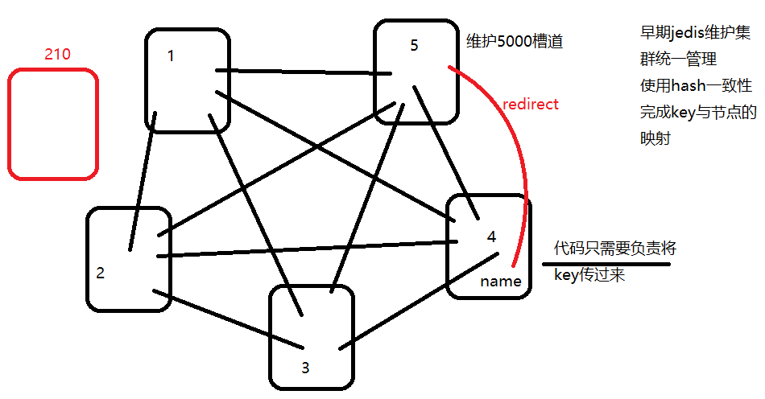

redis集群
本文于314天之前发表，文中内容可能已经过时。
概述
Redis在3.0版正式引入了集群这个特性。Redis集群是一个分布式（distributed）、容错（fault-tolerant）的 Redis内存K/V服务，集群可以使用的功能是普通单机 Redis 所能使用的功能的一个子集（subset），比如Redis集群并不支持处理多个keys的命令（mset、mget）,因为这需要在不同的节点间移动数据,从而达不到像Redis那样的性能,在高负载的情况下可能会导致不可预料的错误。
重要特征
- Redis 集群的分片特征在于将键空间分拆了16384(2^14)个槽位，每一个节点负责其中一些槽位。
- Redis提供一定程度的可用性,可以在某个节点宕机或者不可达的情况下继续处理命令。
- Redis 集群中不存在中心（central）节点或者代理（proxy）节点，集群的其中一个主要设计目标是达到线性可扩展性 （linear scalability）。
- 自动将节点分成主从，形成主从复制，数据备份容灾，同时实现读写分离。
支持Redis的数据分片（Sharding）
Redis 集群的键空间被分割为 16384 （2^14)个槽（slot），集群的最大节点数量也是 16384 个（推荐的最大节点数量为 1000 个），同理每个主节点可以负责处理1到16384个槽位。
当16384个槽位都有主节点负责处理时，集群进入”稳定“上线状态，可以开始处理数据命令。当集群没有处理稳定状态时，可以通过执行重配置（reconfiguration）操作，使得每个哈希槽都只由一个节点进行处理。
重配置指的是将某个/某些槽从一个节点移动到另一个节点。一个主节点可以有任意多个从节点，这些从节点用于在主节点发生网络断线或者节点失效时，对主节点进行替换。
计算key属于哪个槽：
HASH_SLOT = CRC16(key) mod 16384
CRC16其结果长度为16位。
CRC是通信领域中用于校验数据传输正确性的最常用机制，也是Hash算法的一个典型应用，就是把任意长度的输入（又叫做预映射，pre-image）通过散列算法变换成固定长度的输出，该输出就是散列值。这种转换是一种压缩映射，也就是散列值的空间通常远小于输入空间，不同的输入可能会散列成相同的输出，而不可能从散列值唯一的确定输入值。Cluster安装配置
安装Ruby
yum install ruby
ruby –v #ruby 1.8.7
yum install rubygems #也可以一句执行 yum install ruby rubygems -y
gem install redis #安装redis的接口包
gem list #查看是否安装了gem相关的接口包，检查redis是否已经存在创建节点
创建目录
由于cluster的特点，与redis传统主从不同的是，cluster中的节点需要配置在不同的文件夹，否则无法创建集群（尝试过一次，失败）。进入redis根目录，创建节点文件夹，同一个服务器上的不同节点文件夹可以用端口号来命名即可。
mkdir 7000 7001 7002 7003 7004 7005 7006 7007 7008 7009 #创建多个目录
:%s/7000/7001/g #替换所有7000为7001
修改配置文件redis.conf
复制redis.conf到各个的目录，并对应修改下面内容
P61 bind 127.0.0.1//默认ip为127.0.0.1改为其他节点机器可访问的ip
P80 protected-mode no //yes修改为no
P84 port 7000 //端口7000
P128 daemonize yes //后台运行
P150 pidfile /usr/local/src/redis/redis3.2.6/redis_7000.pid //pidfile文件对应7000
P593 appendonly yes //默认是rdb方式持久化要改成AOF模式
P163 logfile=7000/redis.log //相对路径，启动时在redis的根目录
P721 cluster-enabled yes //开启集群
P729 cluster-config-file nodes_7000.conf //集群的配置
P735 cluster-node-timeout 15000 //请求超时默认15秒，可自行设置
启动
启动每个节点实例
先为每个节点创建一个目录，复制redis.conf进去，然后按上面修改内容，修改好后，启动每个实例。
vim start.sh #创建脚本文件方便启动
bash start #执行shell脚本
#!/bin/sh
redis-server 7000/redis.conf&
redis-server 7001/redis.conf&
redis-server 7002/redis.conf&
redis-server 7003/redis.conf&
redis-server 7004/redis.conf&
redis-server 7005/redis.conf&
redis-server 7006/redis.conf&
redis-server 7007/redis.conf&
redis-server 7008/redis.conf&
启动集群
Redis Cluster集群需要ruby来运行其脚本
./src/redis-trib.rb create --replicas 1 192.168.163.201:7000 192.168.163.201:7001 192.168.163.201:7002 192.168.163.201:7003 192.168.163.201:7004 192.168.163.201:7005 192.168.163.201:7006 192.168.163.201:7007 192.168.163.201:7008
service iptables stop
--replicas 1 表示希望为集群中的每个主节点创建一个从节点（一主一从）
前几个自动做为主，后面几个做为从，主节点少于从节点，个数不对应时，多从挂接都一个主上。
注意：提示必须敲入yes，不能是y，y则按不接受处理。
注意：redis-trib-rb的路径，可以配置环境变量来解决
export PATH=/usr/local/ruby-2.1.2/bin;&PATH
检查节点
./src/redis-trib.rb check 192.168.163.201:7001
启动失败重新启动
启动后会自动产生这些文件，重新启动时需要删除！
rm -rf dump.rdb #删除redis的备份文件，redis节点中有数据，无法建立集群
rm -rf nodes-700* #删除没有建立成功集群时遗留的文件
登录集群
redis-cli -c -p 7000 #任何一个端口都可以，执行命名会自动跳转
查看集群状态
127.0.0.1:7000> cluster info
cluster_state:ok
cluster_slots_assigned:16384
cluster_slots_ok:16384
cluster_slots_pfail:0
cluster_slots_fail:0
cluster_known_nodes:9
cluster_size:4
cluster_current_epoch:9
cluster_my_epoch:1
cluster_stats_messages_sent:9154
cluster_stats_messages_received:9154
127.0.0.1:7000> cluster nodes #查看集群节点状态
841b3e80f22c869ba4cf4a1a9829e3711ddcc74e 192.168.163.201:7001 master - 0 1488180921550 2 connected 4096-8191
182c2a3991c331e4e9222f40d33566c63c32be61 192.168.163.201:7007 slave f3b337f67349232c446b9fc1369ae73fe494a48e 0 1488180923571 8 connected
22a9bdce45393c94252524e06952894c096053cb 192.168.163.201:7004 slave 6a455332e5943d627e8cc1e0aa6b81a63e0e0457 0 1488180925089 5 connected
6a455332e5943d627e8cc1e0aa6b81a63e0e0457 192.168.163.201:7000 myself,master - 0 0 1 connected 0-4095
2cb201fc6cce0566d7d664bb5ce4a6899056ff62 192.168.163.201:7002 master - 0 1488180924585 3 connected 8192-12287
e15d5c2ea222ae4c038a009d319ca126a9a5dbd2 192.168.163.201:7008 slave 6a455332e5943d627e8cc1e0aa6b81a63e0e0457 0 1488180927617 9 connected
9c8747f55ffd27681f8191b7b2ff0f298602a236 192.168.163.201:7006 slave 2cb201fc6cce0566d7d664bb5ce4a6899056ff62 0 1488180925596 7 connected
f3b337f67349232c446b9fc1369ae73fe494a48e 192.168.163.201:7003 master - 0 1488180928632 4 connected 12288-16383
c2a9b43e3d91e7f1bc484836cfc59cfd2ed96a49 192.168.163.201:7005 slave 841b3e80f22c869ba4cf4a1a9829e3711ddcc74e 0 1488180926606 6 connected
cluster nodes 命令的输出有点儿复杂，它的每一行都是由以下信息组成的：
节点 ID ：例如 3fc783611028b1707fd65345e763befb36454d73 。
ip:port ：节点的 IP 地址和端口号，例如 127.0.0.1:7000 ，其中 :0 表示的是客户端当前连接的 IP 地址和端口号。
flags ：节点的角色（例如 master 、 slave 、 myself ）以及状态（例如 fail ，等等）。
如果节点是一个从节点的话，那么跟在 flags 之后的将是主节点的节点 ID ：例如 127.0.0.1:7002 的主节点的节点 ID 就是 3c3a0c74aae0b56170ccb03a76b60cfe7dc1912e 。
master节点最后有一个值的范围，就是hash槽，0~16383（2^14），平均的分配到各master节点。
启动后自动配置主从
redis cluster自动,9个redis实例，4主，5从
slave后的uuid就是指主的id值，从这关系中可以看出主从关系
7000的从是：7004,7008
7001的从是：7005
7002的从是：7006
7003的从是：7007
形成主从复制，数据分片存放
[root@localhost redis-3.2.6]# redis-cli -c -p 7000
127.0.0.1:7000> keys *
(empty list or set)
[root@localhost redis-3.2.6]# redis-cli -c -p 7001
127.0.0.1:7001> keys *
1) "name"
127.0.0.1:7001> exit
[root@localhost redis-3.2.6]# redis-cli -c -p 7002
127.0.0.1:7002> keys *
(empty list or set)
127.0.0.1:7002> exit
[root@localhost redis-3.2.6]# redis-cli -c -p 7003
127.0.0.1:7003> keys *
(empty list or set)
127.0.0.1:7003> exit
[root@localhost redis-3.2.6]# redis-cli -c -p 7004
127.0.0.1:7004> keys *
(empty list or set)
127.0.0.1:7004> exit
[root@localhost redis-3.2.6]# redis-cli -c -p 7005
127.0.0.1:7005> keys *
1) "name"
127.0.0.1:7005> exit
[root@localhost redis-3.2.6]# redis-cli -c -p 7006
127.0.0.1:7006> keys *
(empty list or set)
127.0.0.1:7006> exit
[root@localhost redis-3.2.6]# redis-cli -c -p 7007
127.0.0.1:7007> keys *
(empty list or set)
127.0.0.1:7007> exit
[root@localhost redis-3.2.6]# redis-cli -c -p 7008
127.0.0.1:7008> keys *
(empty list or set)
127.0.0.1:7008> exit
验证高可用
杀掉一个7001，集群继续运行
[root@localhost redis-3.2.6]# ps -ef |grep redis
root 5394 1 0 21:59 ? 00:00:50 redis-server 192.168.163.201:7000 [cluster]
root 5398 1 0 21:59 ? 00:00:46 redis-server 192.168.163.201:7001 [cluster]
root 5402 1 0 21:59 ? 00:00:46 redis-server 192.168.163.201:7002 [cluster]
root 5406 1 0 21:59 ? 00:00:46 redis-server 192.168.163.201:7003 [cluster]
root 5410 1 0 21:59 ? 00:00:44 redis-server 192.168.163.201:7004 [cluster]
root 5414 1 0 21:59 ? 00:00:46 redis-server 192.168.163.201:7005 [cluster]
root 5418 1 0 21:59 ? 00:00:45 redis-server 192.168.163.201:7006 [cluster]
root 5422 1 0 21:59 ? 00:00:44 redis-server 192.168.163.201:7007 [cluster]
root 5426 1 0 21:59 ? 00:00:44 redis-server 192.168.163.201:7008 [cluster]
root 6002 2543 0 23:55 pts/0 00:00:00 grep redis
[root@localhost redis-3.2.6]# kill 5398
[root@localhost redis-3.2.6]# ps -ef |grep redis
root 5394 1 0 21:59 ? 00:00:50 redis-server 192.168.163.201:7000 [cluster]
root 5402 1 0 21:59 ? 00:00:46 redis-server 192.168.163.201:7002 [cluster]
root 5406 1 0 21:59 ? 00:00:47 redis-server 192.168.163.201:7003 [cluster]
root 5410 1 0 21:59 ? 00:00:44 redis-server 192.168.163.201:7004 [cluster]
root 5414 1 0 21:59 ? 00:00:46 redis-server 192.168.163.201:7005 [cluster]
root 5418 1 0 21:59 ? 00:00:45 redis-server 192.168.163.201:7006 [cluster]
root 5422 1 0 21:59 ? 00:00:45 redis-server 192.168.163.201:7007 [cluster]
root 5426 1 0 21:59 ? 00:00:44 redis-server 192.168.163.201:7008 [cluster]
root 6004 2543 0 23:55 pts/0 00:00:00 grep redis
[root@localhost redis-3.2.6]# redis-cli -c -p 7000
127.0.0.1:7000> cluster nodes
841b3e80f22c869ba4cf4a1a9829e3711ddcc74e 192.168.163.201:7001 master,fail - 1488182142448 1488182136758 2 disconnected
182c2a3991c331e4e9222f40d33566c63c32be61 192.168.163.201:7007 slave f3b337f67349232c446b9fc1369ae73fe494a48e 0 1488183066434 8 connected
22a9bdce45393c94252524e06952894c096053cb 192.168.163.201:7004 slave c2a9b43e3d91e7f1bc484836cfc59cfd2ed96a49 0 1488183067873 10 connected
6a455332e5943d627e8cc1e0aa6b81a63e0e0457 192.168.163.201:7000 myself,master - 0 0 1 connected 0-4095
2cb201fc6cce0566d7d664bb5ce4a6899056ff62 192.168.163.201:7002 master - 0 1488183068484 3 connected 8192-12287
e15d5c2ea222ae4c038a009d319ca126a9a5dbd2 192.168.163.201:7008 slave 6a455332e5943d627e8cc1e0aa6b81a63e0e0457 0 1488183067462 9 connected
9c8747f55ffd27681f8191b7b2ff0f298602a236 192.168.163.201:7006 slave 2cb201fc6cce0566d7d664bb5ce4a6899056ff62 0 1488183069499 7 connected
f3b337f67349232c446b9fc1369ae73fe494a48e 192.168.163.201:7003 master - 0 1488183070541 4 connected 12288-16383
c2a9b43e3d91e7f1bc484836cfc59cfd2ed96a49 192.168.163.201:7005 master - 0 1488183069914 10 connected 4096-8191
可以看到7001被关闭后，7005自动成为master
同时会根据set时的分片，自动转向到对应的主节点
127.0.0.1:7000> set name 123
-> Redirected to slot [5798] located at 192.168.163.201:7005
OK
192.168.163.201:7005> get name
"123"
192.168.163.201:7005> set n 123
-> Redirected to slot [3432] located at 192.168.163.201:7000
OK
192.168.163.201:7000> get n
"123"
重新启动7001节点，自动回到集群，成为从节点，挂接到7005上
[root@localhost redis-3.2.6]# redis-server 7001/redis.conf
[root@localhost redis-3.2.6]# ps -ef|grep redis
root 5394 1 0 Feb26 ? 00:01:08 redis-server 192.168.163.201:7000 [cluster]
root 5402 1 0 Feb26 ? 00:01:04 redis-server 192.168.163.201:7002 [cluster]
root 5406 1 0 Feb26 ? 00:01:05 redis-server 192.168.163.201:7003 [cluster]
root 5410 1 0 Feb26 ? 00:01:01 redis-server 192.168.163.201:7004 [cluster]
root 5414 1 0 Feb26 ? 00:01:04 redis-server 192.168.163.201:7005 [cluster]
root 5418 1 0 Feb26 ? 00:01:02 redis-server 192.168.163.201:7006 [cluster]
root 5422 1 0 Feb26 ? 00:01:02 redis-server 192.168.163.201:7007 [cluster]
root 5426 1 0 Feb26 ? 00:01:01 redis-server 192.168.163.201:7008 [cluster]
root 6122 1 1 00:14 ? 00:00:00 redis-server 192.168.163.201:7001 [cluster]
root 6128 2543 0 00:14 pts/0 00:00:00 grep redis
[root@localhost redis-3.2.6]# redis-cli -c -p 7000
127.0.0.1:7000> cluster nodes
841b3e80f22c869ba4cf4a1a9829e3711ddcc74e 192.168.163.201:7001 slave c2a9b43e3d91e7f1bc484836cfc59cfd2ed96a49 0 1488183297831 10 connected
182c2a3991c331e4e9222f40d33566c63c32be61 192.168.163.201:7007 slave f3b337f67349232c446b9fc1369ae73fe494a48e 0 1488183298846 8 connected
22a9bdce45393c94252524e06952894c096053cb 192.168.163.201:7004 slave c2a9b43e3d91e7f1bc484836cfc59cfd2ed96a49 0 1488183294789 10 connected
6a455332e5943d627e8cc1e0aa6b81a63e0e0457 192.168.163.201:7000 myself,master - 0 0 1 connected 0-4095
2cb201fc6cce0566d7d664bb5ce4a6899056ff62 192.168.163.201:7002 master - 0 1488183293778 3 connected 8192-12287
e15d5c2ea222ae4c038a009d319ca126a9a5dbd2 192.168.163.201:7008 slave 6a455332e5943d627e8cc1e0aa6b81a63e0e0457 0 1488183295809 9 connected
9c8747f55ffd27681f8191b7b2ff0f298602a236 192.168.163.201:7006 slave 2cb201fc6cce0566d7d664bb5ce4a6899056ff62 0 1488183296819 7 connected
f3b337f67349232c446b9fc1369ae73fe494a48e 192.168.163.201:7003 master - 0 1488183298346 4 connected 12288-16383
c2a9b43e3d91e7f1bc484836cfc59cfd2ed96a49 192.168.163.201:7005 master - 0 1488183299860 10 connected 4096-8191
常见问题
another app is currently holding the yum….
直接 ps –ef|grep yum 杀掉就行了
ERR Slot 5798 is already busy
Can I set the above configuration? (type 'yes' to accept): yes
/usr/lib/ruby/gems/1.8/gems/redis-3.3.2/lib/redis/client.rb:121:in `call': ERR Slot 5798 is already busy (Redis::CommandError)
from /usr/lib/ruby/gems/1.8/gems/redis-3.3.2/lib/redis.rb:2705:in `method_missing'
from /usr/lib/ruby/gems/1.8/gems/redis-3.3.2/lib/redis.rb:58:in `synchronize'
from /usr/lib/ruby/1.8/monitor.rb:242:in `mon_synchronize'
from /usr/lib/ruby/gems/1.8/gems/redis-3.3.2/lib/redis.rb:58:in `synchronize'
from /usr/lib/ruby/gems/1.8/gems/redis-3.3.2/lib/redis.rb:2704:in `method_missing'
from ./src/redis-trib.rb:212:in `flush_node_config'
from ./src/redis-trib.rb:776:in `flush_nodes_config'
from ./src/redis-trib.rb:775:in `each'
from ./src/redis-trib.rb:775:in `flush_nodes_config'
from ./src/redis-trib.rb:1296:in `create_cluster_cmd'
from ./src/redis-trib.rb:1701:in `send'
from ./src/redis-trib.rb:1701
解决办法：删除之前配置产生的文件，nodes-7000.conf
no reachable node in cluster
redis.clients.jedis.exceptions.JedisConnectionException: no reachable node in cluster
at redis.clients.jedis.JedisSlotBasedConnectionHandler.getConnection(JedisSlotBasedConnectionHandler.java:48)
at redis.clients.jedis.JedisClusterCommand.runWithRetries(JedisClusterCommand.java:53)
at redis.clients.jedis.JedisClusterCommand.runWithRetries(JedisClusterCommand.java:70)
at redis.clients.jedis.JedisClusterCommand.run(JedisClusterCommand.java:32)
at redis.clients.jedis.JedisCluster.get(JedisCluster.java:92)
at httpclient.TestCluster.test(TestCluster.java:19)
at sun.reflect.NativeMethodAccessorImpl.invoke0(Native Method)
at sun.reflect.NativeMethodAccessorImpl.invoke(NativeMethodAccessorImpl.java:57)
at sun.reflect.DelegatingMethodAccessorImpl.invoke(DelegatingMethodAccessorImpl.java:43)
at java.lang.reflect.Method.invoke(Method.java:606)
at org.junit.runners.model.FrameworkMethod$1.runReflectiveCall(FrameworkMethod.java:45)
at org.junit.internal.runners.model.ReflectiveCallable.run(ReflectiveCallable.java:15)
at org.junit.runners.model.FrameworkMethod.invokeExplosively(FrameworkMethod.java:42)
at org.junit.internal.runners.statements.InvokeMethod.evaluate(InvokeMethod.java:20)
at org.junit.runners.ParentRunner.runLeaf(ParentRunner.java:263)
at org.junit.runners.BlockJUnit4ClassRunner.runChild(BlockJUnit4ClassRunner.java:68)
at org.junit.runners.BlockJUnit4ClassRunner.runChild(BlockJUnit4ClassRunner.java:47)
at org.junit.runners.ParentRunner$3.run(ParentRunner.java:231)
at org.junit.runners.ParentRunner$1.schedule(ParentRunner.java:60)
at org.junit.runners.ParentRunner.runChildren(ParentRunner.java:229)
at org.junit.runners.ParentRunner.access$000(ParentRunner.java:50)
at org.junit.runners.ParentRunner$2.evaluate(ParentRunner.java:222)
at org.junit.runners.ParentRunner.run(ParentRunner.java:300)
at org.eclipse.jdt.internal.junit4.runner.JUnit4TestReference.run(JUnit4TestReference.java:86)
at org.eclipse.jdt.internal.junit.runner.TestExecution.run(TestExecution.java:38)
at org.eclipse.jdt.internal.junit.runner.RemoteTestRunner.runTests(RemoteTestRunner.java:459)
at org.eclipse.jdt.internal.junit.runner.RemoteTestRunner.runTests(RemoteTestRunner.java:675)
at org.eclipse.jdt.internal.junit.runner.RemoteTestRunner.run(RemoteTestRunner.java:382)
at org.eclipse.jdt.internal.junit.runner.RemoteTestRunner.main(RemoteTestRunner.java:192)
解决办法：检查haps集合是否为空，当配置的节点不正确时无法得到
public void afterPropertiesSet() throws Exception {
Set<HostAndPort> haps = this.parseHostAndPort();
jedisCluster = new JedisCluster(haps, timeout, maxRedirections, poolConfig);
}
Could not get a resource from the pool
redis.clients.jedis.exceptions.JedisConnectionException: Could not get a resource from the pool
at redis.clients.util.Pool.getResource(Pool.java:50)
at redis.clients.jedis.JedisPool.getResource(JedisPool.java:88)
at redis.clients.jedis.JedisClusterConnectionHandler.renewSlotCache(JedisClusterConnectionHandler.java:70)
at redis.clients.jedis.JedisClusterCommand.runWithRetries(JedisClusterCommand.java:78)
at redis.clients.jedis.JedisClusterCommand.runWithRetries(JedisClusterCommand.java:70)
at redis.clients.jedis.JedisClusterCommand.run(JedisClusterCommand.java:32)
at redis.clients.jedis.JedisCluster.get(JedisCluster.java:92)
at httpclient.TestCluster.test(TestCluster.java:19)
at sun.reflect.NativeMethodAccessorImpl.invoke0(Native Method)
at sun.reflect.NativeMethodAccessorImpl.invoke(NativeMethodAccessorImpl.java:57)
at sun.reflect.DelegatingMethodAccessorImpl.invoke(DelegatingMethodAccessorImpl.java:43)
at java.lang.reflect.Method.invoke(Method.java:606)
at org.junit.runners.model.FrameworkMethod$1.runReflectiveCall(FrameworkMethod.java:45)
at org.junit.internal.runners.model.ReflectiveCallable.run(ReflectiveCallable.java:15)
at org.junit.runners.model.FrameworkMethod.invokeExplosively(FrameworkMethod.java:42)
at org.junit.internal.runners.statements.InvokeMethod.evaluate(InvokeMethod.java:20)
at org.junit.runners.ParentRunner.runLeaf(ParentRunner.java:263)
at org.junit.runners.BlockJUnit4ClassRunner.runChild(BlockJUnit4ClassRunner.java:68)
at org.junit.runners.BlockJUnit4ClassRunner.runChild(BlockJUnit4ClassRunner.java:47)
at org.junit.runners.ParentRunner$3.run(ParentRunner.java:231)
at org.junit.runners.ParentRunner$1.schedule(ParentRunner.java:60)
at org.junit.runners.ParentRunner.runChildren(ParentRunner.java:229)
at org.junit.runners.ParentRunner.access$000(ParentRunner.java:50)
at org.junit.runners.ParentRunner$2.evaluate(ParentRunner.java:222)
at org.junit.runners.ParentRunner.run(ParentRunner.java:300)
at org.eclipse.jdt.internal.junit4.runner.JUnit4TestReference.run(JUnit4TestReference.java:86)
at org.eclipse.jdt.internal.junit.runner.TestExecution.run(TestExecution.java:38)
at org.eclipse.jdt.internal.junit.runner.RemoteTestRunner.runTests(RemoteTestRunner.java:459)
at org.eclipse.jdt.internal.junit.runner.RemoteTestRunner.runTests(RemoteTestRunner.java:675)
at org.eclipse.jdt.internal.junit.runner.RemoteTestRunner.run(RemoteTestRunner.java:382)
at org.eclipse.jdt.internal.junit.runner.RemoteTestRunner.main(RemoteTestRunner.java:192)
Caused by: redis.clients.jedis.exceptions.JedisConnectionException: java.net.ConnectException: Connection refused: connect
at redis.clients.jedis.Connection.connect(Connection.java:148)
at redis.clients.jedis.BinaryClient.connect(BinaryClient.java:75)
at redis.clients.jedis.BinaryJedis.connect(BinaryJedis.java:1572)
at redis.clients.jedis.JedisFactory.makeObject(JedisFactory.java:69)
at org.apache.commons.pool2.impl.GenericObjectPool.create(GenericObjectPool.java:819)
at org.apache.commons.pool2.impl.GenericObjectPool.borrowObject(GenericObjectPool.java:429)
at org.apache.commons.pool2.impl.GenericObjectPool.borrowObject(GenericObjectPool.java:360)
at redis.clients.util.Pool.getResource(Pool.java:48)
... 30 more
Caused by: java.net.ConnectException: Connection refused: connect
at java.net.DualStackPlainSocketImpl.waitForConnect(Native Method)
at java.net.DualStackPlainSocketImpl.socketConnect(DualStackPlainSocketImpl.java:85)
at java.net.AbstractPlainSocketImpl.doConnect(AbstractPlainSocketImpl.java:339)
at java.net.AbstractPlainSocketImpl.connectToAddress(AbstractPlainSocketImpl.java:200)
at java.net.AbstractPlainSocketImpl.connect(AbstractPlainSocketImpl.java:182)
at java.net.PlainSocketImpl.connect(PlainSocketImpl.java:172)
at java.net.SocksSocketImpl.connect(SocksSocketImpl.java:392)
at java.net.Socket.connect(Socket.java:579)
at redis.clients.jedis.Connection.connect(Connection.java:142)
... 37 more
解决办法：关闭防火墙
RedisCluster和Spring框架整合
Maven依赖
<dependency>
<groupId>redis.clients</groupId>
<artifactId>jedis</artifactId>
<version>2.8.1</version>
</dependency>
applicationContext-rediscluster.xml
<?xml version="1.0" encoding="UTF-8"?>
<beans xmlns="http://www.springframework.org/schema/beans"
xmlns:xsi="http://www.w3.org/2001/XMLSchema-instance"
xsi:schemaLocation="http://www.springframework.org/schema/beans http://www.springframework.org/schema/beans/spring-beans.xsd">
<!-- jedis 配置-->
<bean id="poolConfig" class="redis.clients.jedis.JedisPoolConfig" >
<!--最大空闲数-->
<property name="maxIdle" value="${redis.maxIdle}" />
<!--最大建立连接等待时间-->
<property name="maxWaitMillis" value="${redis.maxWait}" />
<!--是否在从池中取出连接前进行检验,如果检验失败,则从池中去除连接并尝试取出另一个-->
<property name="testOnBorrow" value="${redis.testOnBorrow}" />
<property name="maxTotal" value="${redis.maxTotal}" />
<property name="minIdle" value="${redis.minIdle}" />
</bean>
<bean id="jedisCluster" class="com.jt.common.util.RedisCluster" >
<property name="addressConfig">
<value>classpath:redis.properties</value>
</property>
<property name="addressKeyPrefix" value="redis.cluster" /><!-- 属性文件里 key的前缀 -->
<property name="timeout" value="${redis.timeout}" />
<property name="maxRedirections" value="6" />
<property name="genericObjectPoolConfig" ref="poolConfig" />
</bean>
</beans>
redis.properties
#最小空闲数
redis.minIdle=100
#最大空闲数
redis.maxIdle=300
redis.maxActive=300
#最大连接数
redis.maxTotal=1000
#客户端超时时间单位是毫秒
redis.timeout=1000
#最大建立连接等待时间
redis.maxWait=1000
#是否在从池中取出连接前进行检验,如果检验失败,则从池中去除连接并尝试取出另一个
redis.testOnBorrow=true
redis.node1.ip=192.168.163.200
redis.node1.port=6379
redis.node2.ip=192.168.163.200
redis.node2.port=6380
redis.node3.ip=192.168.163.200
redis.node3.port=6381
#redis cluster
redis.cluster0.host.port=192.168.163.201:7000
redis.cluster1.host.port=192.168.163.201:7001
redis.cluster2.host.port=192.168.163.201:7002
redis.cluster3.host.port=192.168.163.201:7003
redis.cluster4.host.port=192.168.163.201:7004
redis.cluster5.host.port=192.168.163.201:7005
redis.cluster6.host.port=192.168.163.201:7006
redis.cluster7.host.port=192.168.163.201:7007
redis.cluster8.host.port=192.168.163.201:7008
com.jt.common.util.RedisCluster
package com.jt.common.util;
import java.util.HashSet;
import java.util.Properties;
import java.util.Set;
import java.util.regex.Pattern;
import org.apache.commons.pool2.impl.GenericObjectPoolConfig;
import org.springframework.beans.factory.FactoryBean;
import org.springframework.beans.factory.InitializingBean;
import org.springframework.core.io.Resource;
import redis.clients.jedis.HostAndPort;
import redis.clients.jedis.JedisCluster;
public class RedisCluster implements FactoryBean<JedisCluster>, InitializingBean {
private Resource addressConfig;
private String addressKeyPrefix;
private JedisCluster jedisCluster;
private Integer timeout;
private Integer maxRedirections;
private GenericObjectPoolConfig poolConfig;
private Pattern p = Pattern.compile("^.+[:]\\d{1,5}\\s*$");
public JedisCluster getObject() throws Exception {
return jedisCluster;
}
public Class<? extends JedisCluster> getObjectType() {
return (this.jedisCluster != null ? this.jedisCluster.getClass() : JedisCluster.class);
}
public boolean isSingleton() {
return true;
}
private Set<HostAndPort> parseHostAndPort() {
try {
Properties prop = new Properties();
prop.load(this.addressConfig.getInputStream());
Set<HostAndPort> haps = new HashSet<HostAndPort>();
for (Object key : prop.keySet()) {
if (!((String) key).startsWith(addressKeyPrefix)) {
continue;
}
String val = (String) prop.get(key);
boolean isIpPort = p.matcher(val).matches();
if (!isIpPort) {
throw new IllegalArgumentException("ip 或 port 不合法");
}
String[] ipAndPort = val.split(":");
HostAndPort hap = new HostAndPort(ipAndPort[0], Integer.parseInt(ipAndPort[1]));
haps.add(hap);
}
return haps;
} catch (IllegalArgumentException ex) {
ex.printStackTrace();
} catch (Exception ex) {
ex.printStackTrace();
}
return null;
}
public void afterPropertiesSet() throws Exception {
Set<HostAndPort> haps = this.parseHostAndPort();
jedisCluster = new JedisCluster(haps, timeout, maxRedirections, poolConfig);
}
public void setAddressConfig(Resource addressConfig) {
this.addressConfig = addressConfig;
}
public void setTimeout(int timeout) {
this.timeout = timeout;
}
public void setMaxRedirections(int maxRedirections) {
this.maxRedirections = maxRedirections;
}
public void setAddressKeyPrefix(String addressKeyPrefix) {
this.addressKeyPrefix = addressKeyPrefix;
}
public void setGenericObjectPoolConfig(GenericObjectPoolConfig poolConfig) {
this.poolConfig = poolConfig;
}
}
调用
@Autowired
private JedisCluster jedisCluster;
redisCluster的原理
引入一个叫哈希槽0-16384,每一个槽道都和对应的节点关联,比如
node 1 0-3000,3500-5000
node 2 5001-10000 3001-3499
node 3 10001-16384
当key值传入redis集群中时,key--哈希redis集群取模运算,
"name" --哈希取模 [0-16384]
redis集群的最大特点是支持方便的横向扩展
添加和删除节点
key只做和槽道的映射,不关心自己保存在哪里,槽道变化到哪个节点,key相应的迁移到对应节点
节点的添加和节点的删除,非常方便,直接调用命令
进行槽道重新分布

赏
 支付宝打赏
支付宝打赏
 微信打赏
微信打赏
支付宝打赏
微信打赏
如果文章对你有帮助，欢迎点击上方按钮打赏作者